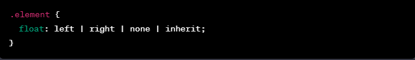
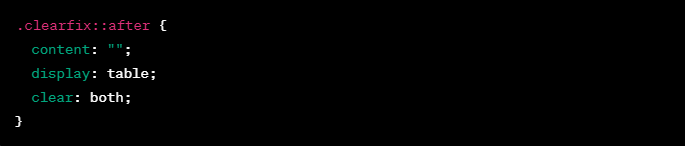

The 'float' property in CSS is used to specify how an element should be positioned within its containing element. When an element is floated, it is taken out of the normal flow of the document and moved to the left or right side of its containing element. This allows other elements to flow around it.
To apply the 'float' property to an element, you can use the following syntax:
When you float an element, it can affect the layout of the surrounding elements. To prevent unexpected layout issues, it's often necessary to clear the float. You can use the 'clear' property to control this behavior:
Apply the "clearfix" class to the container that wraps the floated elements, and it will ensure that the container expands to include the floated elements.
Floats were historically used for creating multi-column layouts, and they are still relevant for certain design patterns. However, with the evolution of CSS and the introduction of Flexbox and Grid, floats are no longer the primary choice for layout design. Flexbox and Grid offer more robust and flexible solutions for creating complex layouts
While floats can be useful, they come with their challenges. Elements with floats are taken out of the normal document flow, which can lead to issues like collapsing container heights. Developers have often resorted to clearfix hacks or other workarounds to address these challenges.
Flexbox and Grid layout systems provide more sophisticated and modern alternatives to floats. They offer better control over the layout, alignment, and distribution of elements. As browser support for these layout methods has become widespread, many developers are transitioning away from floats for layout design.
While the 'float' property in CSS has been a stalwart for layout design, its usage has diminished with the advent of more powerful layout systems like Flexbox and Grid. Understanding floats is still valuable, especially when dealing with legacy code or specific design requirements. However, for contemporary web development, exploring and mastering Flexbox and Grid is highly recommended for more efficient and flexible layout solutions